truss column-bc column-ac crane roller crane roller winch winch
Table of Contents
- 1. Υπολογισμός δοκών στήριξης
- 2. Υπολογισμός ραβδου (BC)
- 3. Υπολογισμός κοχλία προέντασης
- 4. Υπολογισμός ράβδου AC
- 5. Ρουλεμαν ολίσθησης
- 6. Σύστημα ανύψωσης
- 6.1. Δύναμη ανύψωσης
- 6.2. Υπολογισμός συστήματος ανύψωσης
- 6.3. Ισχύς ανύψωσης
- 6.4. Ροπή στρέψης τυμπάνου περιελιξης
- 6.5. Στροφές τυμπάνου περιέλιξης
- 6.6. Επιλογή ανεμιστήρα
- 6.7. Επιλογή συρματόσχοινο
- 6.8. Διαστάσεις σωλήνα συρματοσχοινου
- 6.9. Αξονας στρέψης συρματόσχοινου
- 6.10. Ρουλεμαν
- 6.11. Εσωτερική σωλήνα συρματοσχοινου
- 6.12. Υπολογισμός σχέσης μετάδοσης
- 6.13. Πλανητικός μειωτήρας
- 6.14. Διαστάσεις
- 7. Περιστροφική κίνηση γερανού
- 8. Ελεγχος με πεπερασμένα
1. Υπολογισμός δοκών στήριξης
Η διάταξη του γερανού είναι χωροδικτύωμα.
1.1. Χωροδικτύωμα
Αρχικά θεωρείται πως οι προβολοι το γερανου είναι ραβδοι και δέχονται δυνάμεις μόνο σε εφελκυσμό και θλίψη.
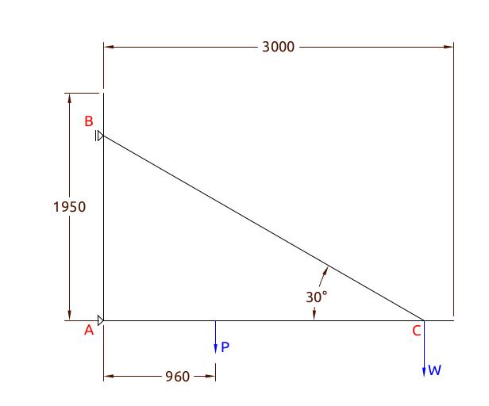
Οι θέσεις των κόμβων σε αυτή τη φάση είναι προσεγγιστικές για την αρχική σχεδίαση.
Οι δυνάμεις σε κάθε κόμβο (Α), (Β), (C) προέρχονται από εφελκυσμό και θλίψη στην αντίστοιχη διευθυνση της κάθε ράβδου.
Το άθροισμα των δυνάμεων σε κάθε κόμβο είναι μηδέν, δηλαδή,
\[\sum Α=0\]
\[\sum Β=0\]
\[\sum C=0\]
Οι δυνάμεις σε κάθε ράβδο μπορεί να είναι εφελκυστικές ή θλιπτικές.
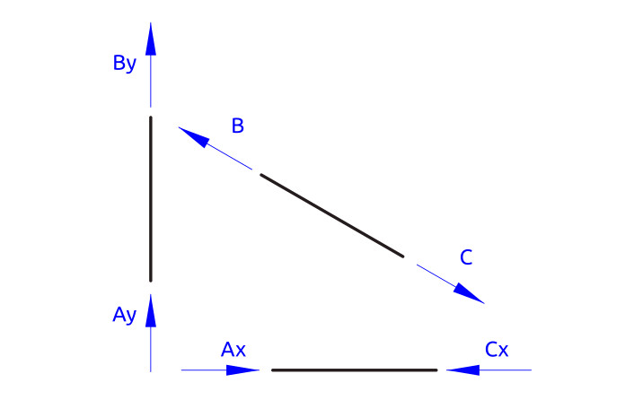
1.2. Σταθερότητα χωροδικτυώματος
Υπολογίζεται αν το χωροδικτύωμα είναι στατικά ορισμένο.
https://www.sjsu.edu/people/steven.vukazich/docs/160.4.3%20Truss%20Stability.pdf
https://en.wikipedia.org/wiki/Truss
Ο υπολογισμός γίνεται με βάση την τιμή:
\[m-2\times j-r\]
όπου,
\(m\) o αριθμός των μελών
\(j\) o αριθμός των κόμβων
\(r\) ο αριθμός των στηρίξεων.
Στο γερανό έχουμε:
| ραβδοι (m) | κόμβοι (j) | r(αντιδράσεις) | m-2j+r | m-2j+3 |
|---|---|---|---|---|
| 3 | 3 | 2 | -1 | 0 |
| >0 σταθερό | στατικά ορισμενο | |||
Υπολογίζονται:
| Είδος που υπολογίζεται | αγνωστοι |
|---|---|
| Δυνάμεις (εφελκυσμό-θλίψη) σε 3 ράβδους | 3 |
| Δυνάμεις στήριξης( αντιδράσεις στα (Α),(Β) | 2 |
| Αθροισμα αγνωστες τιμές : | 5 |
Ο κάθε κόμβος δίνει 2 εξισώσεις 1 κατά διευθυνση \(Χ\) και 1 κατά \(Υ\).
| Εξισώσεις | κομβοι |
|---|---|
| Εξισώσεις Κατά Χ | 3 |
| Εξισώσεις Κατά Υ | 3 |
| Δεδομένες εξισώσεις | 6 |
Το πρόβλημα είναι γραμμικό.
Έχουμε 1 παραπάνω εξίσωση από άγνωστο.
Το σύστημα είναι σταθερό αλλά αόριστο.
Για να υπολογιστεί χρειάζεται ο υπολογισμός και των παραμορφώσεων.
Πρακτικά θεωρούμε πως το (Β) είναι κύλιση και το κάθετο βάρος του γερανού, λαμβάνεται εξ'όλοκλήρου στο (Α). Το οποιό είναι υπερδιαστασιολόγηση για τη στήριξη (Α).
1.3. Υπολογίσμός χωρίς τη στήριξη (ΑΒ)
Αγνοουμε για λίγο το μέλος (ΑΒ). και θεωρούμε 2 μέλη AC, BC.
| ραβδοι (m) | κόμβοι(j) | r(αντιδράσεις) | m-2j+r | m-2j+3 |
|---|---|---|---|---|
| 2 | 3 | 2 | -2 | -1 |
| >0 σταθερό | αοριστο |
Στο γερανό είναι
| ραβδοι (m) | κόμβοι(j) | r(αντιδράσεις) | m-2j+r | m-2j+3 |
|---|---|---|---|---|
| 2 | 3 | 2 | -2 | -1 |
| >0 σταθερό | αοριστο | |||
Πρέπει να υπολογίστούν:
| Δυνάμεις (εφελκυσμό-θλίψη) σε 3 ράβδους | 2 άγνωστοι |
| Δυνάμεις στήριξης( αντιδράσεις στα (Α),(Β) | 2 άγνώστοι |
| 4 άγνωστες τιμές |
Ο κάθε κόμβος δίνει 2 εξισώσεις 1 κατά διευθυνση Χ και 1 κατά Υ.
| κομβοι | |
|---|---|
| Εξισώσεις Κατά Χ | 3 |
| Εξισώσεις Κατά Υ | 3 |
| Δεδομένες εξισώσεις | 6 |
1.4. 1η προσεγγιση ως προς τις δυνάμεις ως χωροδικτύωμα
Μια πρώτη προσέγγιση για των υπολογισμό των δυνάμεων είναι:
Απο τις δυνάμεις η γνωστή είναι η δύναμη του φορτίου στο ακρο C.
Από τα τριγωνο των δυνάμεων χρησιμοποιυμε τη γεωμετρική λύση.
Επειδη η γωνία είναι \(~30^ο\) σχηματιζεται ισόπλευρο τρίγωνο
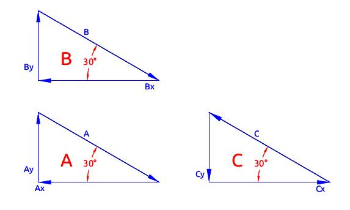
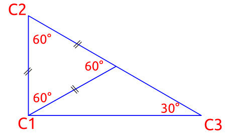
Οι δυνάμεις κοπής υπολογίζονται σε κάθε σημείο:
\[C_2C_3=2\times C_1C_2\]
\[C_1C_3=1.7\times C_1C_2\]
1.5. Υπολογισμός δυνάμεων στο χωροδικτύωμα
H δυναμη \(C_y\) είναι η μέγιστη δύναμη που ασκείται στο \(C\), η το πιο απομακρυσμένο σημέιο από τη στήριξη.
Θεωρείται για τους υπολογισμούς του σχεδιασμου πως αυτή είναι η δυσμενέστερη θέση απο άποψη αντοχής.
Οι δυναμεις σε αυτό το σημείο είναι από τα δεδομένα του προβλήματος:
| Είδος δύναμης | Τιμή(Ν) |
|---|---|
| Μέγιστη δυνατότητα ανύψωσης: | 20000 |
| Συρματόσχοινο: | 860 |
| Γαντζος | 70 |
| Βαρος γερανού: | 6210 |
| Αθροισμα: | 27140 |
| 27.140kN |
Από τα διαγράμματα και τη γεωμετρια του τριγώνου υπολογίζονται οι δυνάμεις στους υπόλοιπους κόμβους:
| Δυναμή | Τυπος υπολογισμού | Τιμή | Μονάδες | |
|---|---|---|---|---|
| \(C_y\) | δεδομένο | 27,140 | kN | Βάρος φορτίου |
| \(C\) | \(2\times C_y\) | 54,28 | kN | εφελκυσμός στη ραβδο (ΒC) |
| \(C_x\) | \(1,7\times C_y\) | 92,27 | kN | θλίψη στη ραβδο (AC) |
| \(B\) | \(C\) | 54,28 | kN | εφελκυσμός στη ραβδο (ΒC) |
| \(B_x\) | \(0,6\times C\) | 32,56 | kN | *στηριξη στον τοιχο |
| \(B_y\) | \(0,5 \times B_x\) | 0 | **θεωρουμε κύλιση στο (Β) | |
| \(A_x\) | \(C_x\) | 46,13 | kN | θλίψη στη ραβδο (AC) |
| \(A_y\) | \(C_y\) | 27,14 | kN | **το βαρος του γερανού |
| \(Α\) | \(2\times A_y\) | 54,28 | kN | *στηριξη στον τοιχο |
*Οι δυνάμεις στήριξης στον τοίχο χρειάζονται για τον υπολογισμό των κοχλιών βάσεις (post) του γερανού.
**Το βάρος του γερανού προστίθεται ολόκληρο στη θέση (C), για λόγους υπολογισμού αντοχής. Ενα τμήμα του κάθετου φορτίου θα μπορούσε να λαμβάνεται από το (Β).
1.6. Τεχνικά χαρακτηριστικά χάλυβα
Τα δομικά στοιχεία του γερανού κατασκευάζονται από χάλύβα.
Τα τεχνικά χαρακτηριστικά του χάλυβα είναι:
| Είδος: | Τιμή | Μονάδες |
|---|---|---|
| Χάλυβας: St37 / AISI1006 | ||
| Παραμόρφωση: | 22 | % |
| Τάση διαρροής (0.2%) : | 370 | MPa |
| Μέγιστες διατμητικές τάσεις: | 230 | MPa |
| Πυκνότητα: | 7800 | \(Kg/m^3\) |
| Elastic modulus | 200 | \(GPa\) |
2. Υπολογισμός ραβδου (BC)
Η δοκός καταπονείται (BC) σε εφελκυσμό.
Οι εξισώσεις του εφελκυσμού είναι:
\[\sigma = \frac{P}{A}\]
\[\epsilon = \frac{\sigma}{E}\]
\[\delta = \frac{P \times l}{A \times E}\]
| Μήκος ράβδου | 3150 | mm | ||
| P | \(C = 2 \times W\) | 54.28 | kΝ | εφελκυσμός στη ραβδο (ΒC) |
| Τάση διαρροής (0.2%) : | \(\sigma\) | 370 | MPa | |
| Επιφάνεια δοκού | \(Α=\dfrac{P}{c}\) | 1.46e-4 | m2 | |
| 1.46 | cm2 | |||
| ενταση: | \(\epsilon=\dfrac{\sigma}{Ε}\) | 0.00185 | ||
| Μετατόπιση: | 5.82 | mm |
Επομένως στο όριο της δύναμης και τάση διαρροής, η διάμετρος πρέπει να έχει επιφάνεια: \(Α:1.46\times10^{(-4)}m^2\)
2.1. Επιλογή ράβδου
Η ράβδος (ΒC) επιλέγεται από τον πίνακα
https://www.nspc.nipponsteel.com/en/products/building_kenchiku.html
| Εξωτερική διάμετρος | Παχος [t] | μαζα [m] | Επιφάνεια [Α] | Ροπή αδράνειας [I] | Section modulus | Radius of gyration |
|---|---|---|---|---|---|---|
| mm | mm | Kg/m | cm2 | cm4 | cm3 | cm |
| 21.7 | 2.3 | 1.10 | 1.402 | 0.669 | 0.616 | 0.691 |
| 27.2 | 1.9 | 1.19 | 1.510 | 1.22 | 0.893 | 0.897 |
| 27.2 | 2.3 | 1.41 | 1.799 | 1.41 | 1.03 | 0.884 |
H μικρότερη ράβδος που καλύπτει την αντοχή επιφάνειας με \(Α>1.46cm^2\) είναι η ράβδος 27.2x1.9 με μήκος 3150mm
Επιλέγουμε την 27.2x2.3
| Ειδός | σωλήνα 27.3x2.3 |
| Εξωτερική διάμετρος | 27.2 |
| Πάχος | 2.3 |
| Εσωτερική | 22.6 |
3. Υπολογισμός κοχλία προέντασης
Τοποθετείται κοχλία, ώστε η ράβδος να βρίσκεται σε προένταση.
Το φόρτιο της ράβδου BC υπολογίστηκε από το χωροδικτύωμα:
\[P=54,28κΝ\]
| Tensile | Shear | Fv | Punch | |
|---|---|---|---|---|
| Size | 8.8 | 8.8 | S355 / ≥5.6 | |
| M5 | 8.18 | 5.45 | 4.9 | 6.37 |
| M6 | 11.6 | 7.72 | 5.88 | 7.96 |
| M7 | 16.6 | 11.1 | 6.86 | 8.76 |
| M8 | 21.1 | 14.1 | 7.84 | 10.35 |
| M10 | 33.4 | 22.3 | 9.8 | 12.74 |
| M12 | 48.6 | 32.4 | 11.76 | 14.33 |
| M14 | 66.2 | 44.2 | 13.72 | 16.72 |
| M16 | 90.4 | 60.3 | 15.68 | 19.11 |
| M18 | 110.6 | 73.7 | 17.64 | 21.49 |
| M20 | 141.1 | 94.1 | 19.6 | 23.88 |
| M22 | 174.5 | 116.4 | 21.56 | 27.07 |
| M24 | 203.3 | 135.6 | 23.52 | 28.66 |
| M27 | 264.4 | 176.3 | 26.46 | 32.64 |
| M30 | 323.1 | 215.4 | 29.4 | 36.62 |
| M33 | 399.7 | 266.5 | 32.34 | 39.8 |
| M36 | 470.6 | 313.7 | 35.28 | 43.78 |
| M39 | 562.2 | 374.8 | 38.22 | 47.76 |
https://eurocodeapplied.com/design/en1993/bolt-design-properties
Από τον πίνακα της πηγής 1 είναι:
| Είδος | |
|---|---|
| Κοχλίας προέντασης | Μ14 8.8 |
| Κοχλίας κάμψης | Μ16 8.8 |
4. Υπολογισμός ράβδου AC
4.1. Δοκοί που επιλέγονται
4.2. Με δοκό ΗΕΑ
| Profile | HEA100 | HEA120 |
|---|---|---|
| Depth h [mm] | 96 | 114 |
| Width b [mm] | 100 | 120 |
| Web thickness tw [mm] | 5 | 5 |
| Flange thickness tf [mm] | 8 | 8 |
| Weight m [kg/m] | 16.7 | 19.9 |
| Perimeter P [m] | 0.561 | 0.677 |
| Area A [mm2] | 2124 | 2534 |
| Second moment of area Iy [×106 mm4] | 3.492 | 6.062 |
| Elastic section modulus Wel,y [×103 mm3] | 72.76 | 106.3 |
| Plastic section modulus Wpl,y [×103 mm3] | 83.01 | 119.5 |
4.3. Με δοκο IPE
| Profile | IPE80 | IPE100 | IPE120 | IPE140 | IPE160 |
|---|---|---|---|---|---|
| Depth h [mm] | 80 | 100 | 120 | 140 | 160 |
| Width b [mm] | 46 | 55 | 64 | 73 | 82 |
| Web thickness tw [mm] | 3.8 | 4.1 | 4.4 | 4.7 | 5 |
| Flange thickness tf [mm] | 5.2 | 5.7 | 6.3 | 6.9 | 7.4 |
| Root radius r [mm] | 5 | 7 | 7 | 7 | 9 |
| Weight m [kg/m] | 6 | 8.1 | 10.4 | 12.9 | 15.8 |
| Perimeter P [m] | 0.328 | 0.4 | 0.475 | 0.551 | 0.623 |
| Area A [mm2] | 764 | 1032 | 1321 | 1643 | 2009 |
| Shear area z-z Av,z [mm2] (for η=1.2) | 358 | 508 | 631 | 764 | 966 |
| Shear area y-y Av,y [mm2] | 478 | 627 | 806 | 1007 | 1214 |
| Second moment of area Iy [×106 mm4] | 0.8014 | 1.71 | 3.178 | 5.412 | 8.693 |
| Radius of gyration iy [mm] | 32.4 | 40.7 | 49 | 57.4 | 65.8 |
| Elastic section modulus Wel,y [×103 mm3] | 20.03 | 34.2 | 52.96 | 77.32 | 108.7 |
| Plastic section modulus Wpl,y [×103 mm3] | 23.22 | 39.41 | 60.73 | 88.34 | 123.9 |
4.4. Υπολογισμός ραβδου (AC)
Η δοκός καταπονείται (AC) σε θλίψη.
Οι εξισώσεις της αξονικής φόρτισης είναι:
\[\sigma = \frac{P}{A}\]
\[\epsilon = \frac{\sigma}{E}\]
\[\delta = \frac{P \times l}{A \times E}\]
| Μήκος ράβδου | 3000 | mm | ||
| P | \(C_x\) | 46 | kΝ | εφελκυσμός στη ραβδο (ΒC) |
| Τάση διαρροής (0.2%) : | σ | 370 | MPa | |
| Επιφάνεια δοκού | \(Α=P/σ\) | 1.2432432e-4 | m2 | |
| 1.2 | cm2 | |||
| ενταση: | \(ε=σ/Ε\) | 1.85e-3 | ||
| Μετατόπιση: | 5.55 | mm |
Επομένως στο όριο της δύναμης και τάση διαρροής, η ράβδος πρέπει να έχει επιφάνεια: \(Α:1.24\times10^{(-4)}m^2\)
4.5. Υπολογισμός σε κάμψη
Η οριζόντια ράβδος υπολογιζεται και ως προς την αντοχή της σε κάμψη, λόγω της οριζόντιας κίνησης του κάθετου φορτίου σε ενδιάμεσες θέσεις.
Η τάση είναι:
\[\sigma = \frac{M \times c}{I}\]
Ο συντελεστής αξονικού φορτίου σε θλίψη είναι:
\[k = {\frac{P} { E \times I}}^{0.5}\]

Tο κρίσιμο σημείο αντοχής είναι κάμψη οταν η θέση του φορτίου ανύψωσης είναι στη μέση των δύο στηρίξεων (Α), (C).
Επίσης η ροπή κάμψης μειώνεται με το μήκος της ανοίγματος (AC)
Λυνουμε το σύστημα των εξισώσεων
Με δοκιμές για τις δοκούς είναι:
| I [x106 mm4} | Οριζόντια απόσταση l [mm] | σ [ΜPa] | ||
|---|---|---|---|---|
| IPE80 | 0.8014 | 3000 | 3859 | |
| 1500 | 1589 | |||
| IPE100 | 1.71 | 3000 | 1839 | |
| 1500 | 732 | |||
| IPE120 | 3.178 | 3000 | 794 | |
| 1500 | 389 | |||
| IPE140 | 5.412 | 3000 | 466 | |
| 2600 | 400 | |||
| 2500 | 384 | |||
| 2400 | 368 | |||
| 2000 | 305 | |||
| 1500 | 231 | |||
| 1000 | 150 |
Το όριο διαρροής του σιδήρου είναι \[sigma=370MPa\] και επιλέγεται δοκός IPE140.
To σημείο (C) μετατοπίζεται αριστερά.
4.6. Υπολογισμός θέσης σημείου C

Με μετακίνηση του σημείου (C) δημιουργείται ένας προβολος όταν ο γερανός μετακινείται στο πιο δεξιο σημείο.
Η ροπή είναι:
\[M=-W\times l\]
Ο πινακας υπολογισμού γίνεται:
| I [x106 mm4} | Οριζόντια προβολή l2=3000-l [mm] | σ [ΜPa] | ||
|---|---|---|---|---|
| IPE140 | 5.412 | 2000 | 1400 | |
| 1000 | 702 | |||
| 500 | 351 | |||
| 400 | 280 |
5. Ρουλεμαν ολίσθησης
5.1. Δυναμη ανύψωσης
Η μεγιστη δύναμη ανύψωσης είναι:
| Είδος δύναμης | Τιμή(Ν) |
|---|---|
| Μέγιστη δυνατότητα ανύψωσης: | 20000 |
| Συρματόσχοινο: | 860 |
| Γαντζος | 70 |
| Αθροισμα: | 20930 |
| 20.930kN |
Η δύναμη θα ισομοιραστεί σε 8 ρόδες κύλισης πάνω στη δοκό.
Η δύναμη σε κάθε ρόδα είναι:
| Δύναμη ανύψωσης : | 20930 | Ν |
| Δύναμη μηχανισμού ανύψωσης | 1000 | Ν |
| Άθροισμα: | 21930 | Ν |
| Αριθμός ροδών κύλισης | 8 | |
| Δύναμη σε κάθε ρόδα | 2741.25 | N |
| Εδρανα κύλισης ανά ρόδα: | 2 | |
| Κάθετη δύναμη στο έδρανο κύλισης* | 1370.625 | N |
*Η δύναμη σε κάθε έδρανο κύλισης εξαρτάται και από τον τρόπο στήριξης και μπορεί να είναι διαφορετική σε κάθε έδρανο.
Επιλέγονται ρουλεμαν SKF 10-6000
| Bore diameter | 10 mm |
| Outside diameter | 26 mm |
| Width | 8 m |
| Basic dynamic load rating | 4.75 kN |
| Basic static load rating | 1.96 kN |
| Limiting speed | 40 000 r/min |
| Reference speed | 67 000 r/min |
| SKF performance class | SKF Explorer |
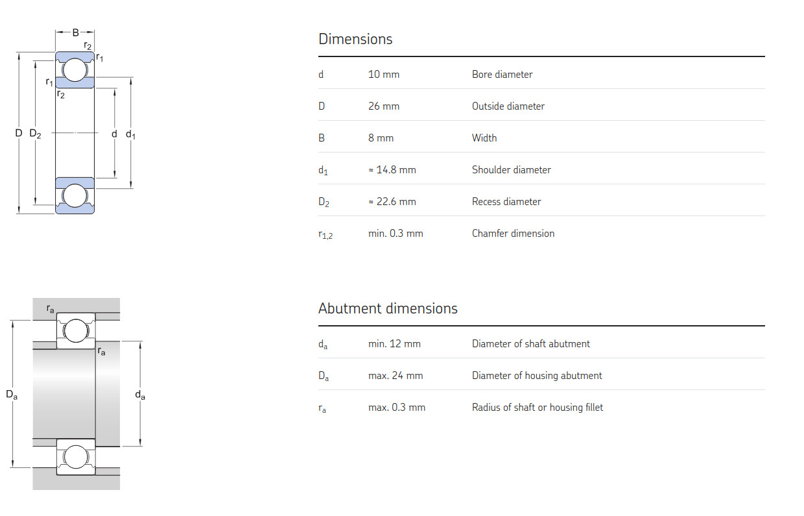
5.2. Ροδες κύλισης
Επιλέγονται 8 ρόδες με εξωτερική διάμετρο 34mm και πλάτος 30mm
| Εξωτερική διάμετρος | Παχος [t] | Εσωτερική διάμετρος |
|---|---|---|
| mm | mm | |
| 34.0 | 3.2 | 27.6 |
https://www.karl-georg.de/images/sortiment_laufraeder/pdf/en/crane_wheels-general_information.pdf
Τα ρουλεμαν λιπαινονται με γρασο, λογω του χαμηλού αριθμού στροφών.
5.3. Αξονας ρουλεμαν
Ο αξονας επιλέγεται με βάση τα ρουλεμαν 10mm
5.4. Σχέδια στηριξης
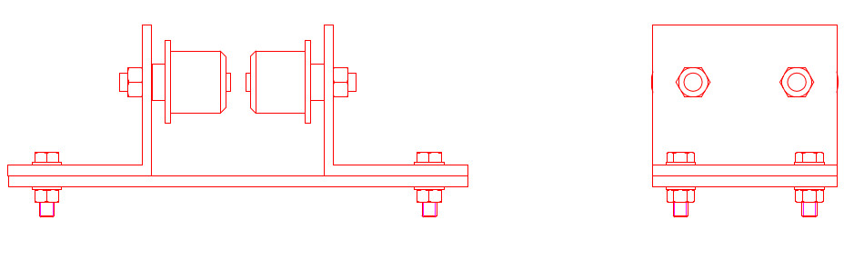
5.5. Σχέδια ρουλεμαν
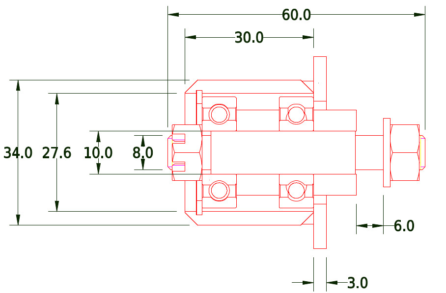
6. Σύστημα ανύψωσης
6.1. Δύναμη ανύψωσης
Η μεγιστη δύναμη ανύψωσης είναι:
| Είδος δύναμης | Τιμή(Ν) |
|---|---|
| Μέγιστη δυνατότητα ανύψωσης: | 20000 |
| Συρματόσχοινο: | 860 |
| Γαντζος | 70 |
| Αθροισμα δύναμης F: | 20930 |
| 20,93kN |
6.2. Υπολογισμός συστήματος ανύψωσης
6.3. Ισχύς ανύψωσης
H απαιτούμενη ισχύς είναι:
\[W_{lift} = F \times u\],
όπου F η δύναμη ανύψωσης \(F = 21kN\)
u η ταχύτητα ανύψωσης \(u = 12\dfrac{m}{min}\)
| Δυναμη ανύψωσης [F] | 21 | kN |
| Ταχύτητα ανύψωσης [u] | 12 | \(\dfrac{m}{min}\) |
| Wlift | 4200. | W |
6.4. Ροπή στρέψης τυμπάνου περιελιξης
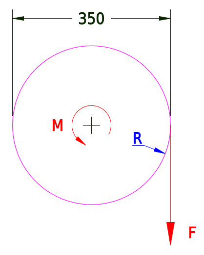
Η ροπή στρέψης από την ανύψωση του φορτίου είναι:
\[Μ_{lift} = F \times R \]
| Δυναμη ανύψωσης [F] | 21 | kN |
| Διάμετρος τυμπάνου | 350 | mm |
| Mlift | 3.675 | N*m |
6.5. Στροφές τυμπάνου περιέλιξης
\[u_{lift} = \omega \times R \]
\[\omega = \frac{u_{lift}}{R} \]
| Ταχύτητα ανύψωσης [u] | 12 | \(\frac{m}{min}\) |
| Διάμετρος τυμπάνου [D] | 350 | \(mm\) |
| \(\omega\) | 69 | rpm |
6.6. Επιλογή ανεμιστήρα
Επιλέγεται ηλεκτροκινητήρας:
| Ισχύς | 4 | kW |
| Στροφές λειτουργίας | 750 | rpm |
6.7. Επιλογή συρματόσχοινο
Επιλέγεται συματόσχοινο με διάμετρο 6.4mm σύμφωνα με τον παρακάτω πίνακα:
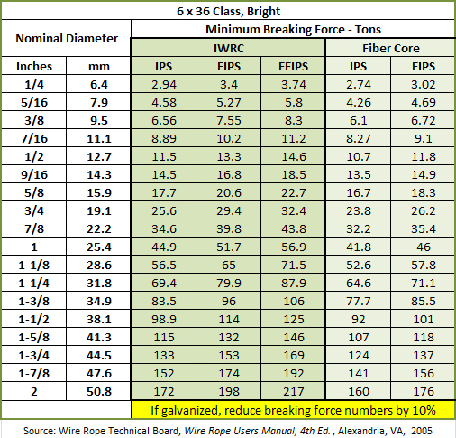
Για μήκος περίπου 3m είναι:
| Διάμετρος συρματόσχοινο | 6.4 | mm |
| Επιφάνεια | 32.1536 | \(mm^2\) |
| Μήκος | 3000 | mm |
| Όγκος | 96460.8 | mm3 |
| Διάμετρος τυμπάνου | 350 | mm |
Η σχέση εξωτερικής διαμέτρου τυμπάνου και μήκους είναι:
| Rin | Rout | L | |
|---|---|---|---|
| 175 | 300 | 517 | |
| 175 | 350 | 330 |
6.8. Διαστάσεις σωλήνα συρματοσχοινου
| DN | NB(inch) | ASME | SCH10 | |
|---|---|---|---|---|
| 350 | 14" | 355.6 | 6.35 | 7.92 |
6.9. Αξονας στρέψης συρματόσχοινου
Η ροπή στρέψης είναι: \(Τ:3675Nm\)
| T | 3675 | 3675 | Nm | ||
| t | 2.3 | 0.6 | mm | ||
| D | 21.7 | 20 | mm | ||
| A | t*D*π | 156.7174 | 37.68 | mm2 | |
| τ | \(\frac{T}{2tA}\) | 5.1 | 81.3 | MPa | |
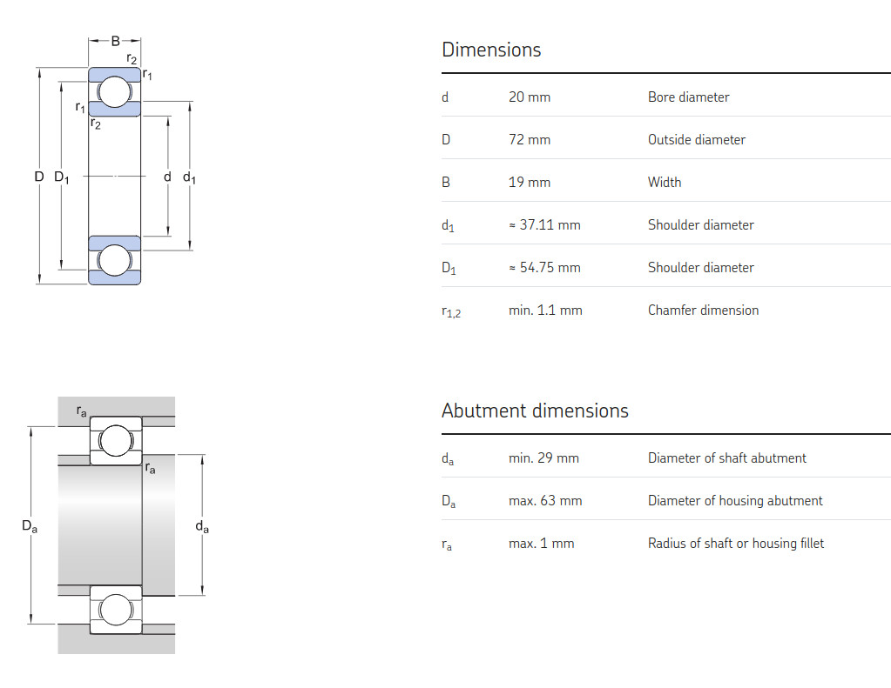
6.10. Ρουλεμαν
Επιλέγεται τύπος ρουλεμάν: SKF-6404
Τεχνικά χαρακτηριστικά 1
| Basic dynamic load rating | 30.7 kN |
| Basic static load rating | 15 kN |
| Bore diameter | 20 mm |
| Outside diameter | 72 mm |
| Width | 19 mm |
Τεχνικά χαρακτηριστικά 1
| Basic dynamic load rating | C | 30.7 kN |
| Basic static load rating | C0 | 15 kN |
| Fatigue load limit | Pu | 0.64 kN |
| Reference speed | 24 000 r/min | |
| Limiting speed | 15 000 r/min | |
| Minimum load factor | kr | 0.035 |
| Calculation factor | f0 | 11 |
6.11. Εσωτερική σωλήνα συρματοσχοινου
Πατάει στην εξωτερική του ρουλεμαν
| Diameter | 76.3 |
| Wall thickness | 2.8 |
| Inside diameter | 70.7 |
6.12. Υπολογισμός σχέσης μετάδοσης
| Στροφές ΗΚ | \(n_{motor}\) | 1400 | rpm | |
|---|---|---|---|---|
| Μέση ταχύτητα ανύψωσης | \(u_m\) | 12 | m/min | |
| Εσωτερική διάμετρος τυμπάνου | \(d_w = 2 \times r_w\) | 400 | mm | |
| Αριθμος συρματοσχοίνων | \(k\) | 2 | ||
| Περιστροφική ταχύτητα τυμπάνου | \(n_{winch} = k \times \dfrac{u_m}{r_w}\) | 120 | rpm | |
| Σχέση μετάδοσης τυμπάνου | \(i_1 = \dfrac{1}{k} \times \dfrac{n_{motor}}{n_{winch}}\) | 11,66 | ||
| Από πίνακα σχέσης μετάδοσης επιλέγεται | \(i_{total}\) | 12 | ||
| Εσωτερική διάμετρος τυμπάνου | \(d_{in}\) | 350 | mm | |
| Εξωτερική διάμετρος τυμπάνου | \(d_{out}\) | 400 | rpm | |
| Ταχύτητα max | 8,75 | |||
Η διάμετρος του τυμπάνου επηρρεάζει την ταχύτητα ανύψωσης, για σταθερές στροφές τυμπάνου.
6.13. Πλανητικός μειωτήρας
https://en.wikipedia.org/wiki/Epicyclic_gearing
Τα στάδια του πλανητικού μειωτήρα είναι:
| Στάδια πλανητικού μειωτήρα | Σχέση μετάδοσης | |
|---|---|---|
| Στάδιο 1 | \(i_1\) | 4 |
| Στάδιο 2 | \(i_2\) | 3 |
| \(i = i_1 \times i_2\) | 12 |
6.14. Διαστάσεις
| Διάμετρος δακτυλιου | \(D_r\) | 270 | mm | |
| Σχέση μετάδοσης | \(i\) | 3 | ||
| Διάμετρος κεντρικού | \(d_r\) | 90 | mm |
7. Περιστροφική κίνηση γερανού
7.1. Μειωτήρας περιστροφικής κίνησης
Η σχέση μετάδοσης υπολογίστηκε:
| γωνιακή ταχύτητα γερανού | \(i_2\) | 0.6 | rpm | |
| Στροφές κινητήρα | \(i_1\) | 750 | rpm | |
| Σχέση μετάδοσης κινητήρα - γερανού | \(i=\dfrac{i_1}{i_2}\) | 1125. | mm/min |
Με βάση την σχέση μετάδοσης επιλέγεται πολυβάθμιος μειωτήρας.
Οι επιλογές ανάλογα με τις βαθμίδες είναι:
| Ολική σχέση μετάδοσης | Βαθμίδες μειωτήρα | Σχέση μετάδοσης κάθε σταδίου | ||
|---|---|---|---|---|
| Σχέση μετάδοσης | 1125 | 2 | 33.5 | |
| 1125 | 3 | 10.4 | ||
| 1125 | 4 | 5.8 | ||
| 1125 | 5 | 4.1 | ||
| 1125 | 6 | 3.2 | ||
| 1125 | 7 | 2.7 |
Η σχεση μετάδοσης είναι πολύ μεγάλη για να χρησιμοποιηθεί απλός πολυβάθμιος με μειωτήρας
7.2. Υπολογισμός ροπής στρέψης
Οι δυνάμη τριβής από την κάθετη δύναμή στη στήριξη είναι:
Η αρθρωση ολισθαίνει περιστροφικά πάνω στη στη στήριξη.
Η τριβή υπολογίζεται από την παρακάτω πηγή:
\[Μ = \dfrac{2}{3}\times μ_κ \times F_{load} \times R_0\]
, όπου \(R_0\) η εξωτερική του δίσκου επαφής.
| Συντελεστής τριβή ολίσθησης χάλυβα-χάλυβα | \(μ_κ\) | 0.57 | |
| Κάθετη δύναμή στη στήριξη: | \(F_{load}\) | 27.14 | κΝ |
| Εξωτερική ακτίνα δίσκου επαφής | \(R_0\) | 40 | mm |
| Ροπή τριβής | \(Μ = \dfrac{2}{3}\times μ_κ \times F_{load} \times R_0\) | 413 | Nm |
Η περιστροφική κίνηση μπορεί να γίνει με απλή τριβή δύο δίσκων.
7.2.1. Υπολογισμός πλευρικής δύναμης εκκρεμούς
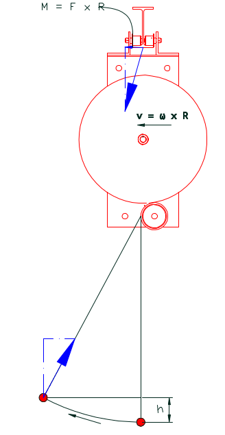
Η μέγιστη κινητική ενέργεια του φορτίου κατά την περιστροφή είναι:
\[Ε_{kin} = \dfrac{1}{2} \times m \times v^2\]
| Μάζα | m | 29 | kN |
| Ταχύτητα | v | 0.19 | m/s |
| Κινητική ενεργεια φορτίου: | 5.2345e-4 | W |
Η κινητική ενέργεια του εκρεμμούς μετατρέπεται σε δυναμική ενέργεια, (το φορτίο κάνει εκρεμμές και ανυψώνεται σύμφωνα με τη σχέση:)
\[E_{dyn} = m \times g \times h \]
Επειδή:
\[E_{dyn} = Ε_{kin}\]
Το φορτίο ανυψώνεται κατά την περιστροφική κίνηση με σταθερή ταχύτητα κατά
\[h = \dfrac{u^2}{2\times g}\]
| ταχύτητα | v | 0.19 | m/s |
| Υψος εκρεμμούς | \(h = \dfrac{u^2}{2\times g}\) | 1.805e-3 | m |
Για ύψος φορτίου 1 μέτρο
Η γωνία του εκρεμμούς είναι:
| Υψος εκρεμμούς | \(h = \dfrac{u^2}{2\times g}\) | 1.805e-3 | m |
| Υψος συρματόσχοινο | 1 | m | |
| Γωνία | 3.44 | degrees |
Tο φαινόμενο είναι δυναμικό και η πραγματικήξ γωνία πιθανόν να διαφέρει
Δημιουργείται πλευρική δύναμη.
| Κάθετη δύναμη | F | 27.14 | kN | |
| Γωνία εκρεμμούς | a | 3.44 | deg | |
| Πλευρική δύναμή εκρεμμόυς | Fx | 1.63 | kN |
Η ροπή που δημιουργείται είναι:
\[M_{dyn} = F \ times R\]
| Δύναμη | F | 1.63 | kN | |
| Ακτίνα | R | 3000 | mm | |
| 4890. | Nm |
7.3. Υπολογισμός ισχύς ηλεκτροκινητήρα για στρέψη:
Η ισχύς του ηλεκτροκινητήρα υπολογίστηκε από τη σχέση:
\[P = M \times \omega\],
, όπου Μ η ροπή στρέψης,
\(\omega\) η γωνιακή ταχύτητα
| Ροπή εκρεμμούς | 4890 | ||
| Ροπή τριβής | 413 | ||
| Συνολική ρόπής στρέψης | Μ | 5303 | Nm |
| γωνιακή ταχύτητα | \(\omega\) | 0.6 | rpm |
| Ισχύς ηλεκτροκινητήρα | \(P = M \times \omega\) | 333 | W |
| Απόδοση μετάδοσης κίνησης | 0.90 | ||
| Συνολική ισχύς | 370 | W | |
| Ηλεκτροκινητήρας που επιλέγεται | 370 | W | |
| Στροφές λειτουργίας HK | 750 | rpm | |
| Σχέση μετάδοσης: | 1215 | ||
| Μέγιστη ροπή κινητήρα @750rpm | 4.4 | Nm |
7.4. Επιλογή τύπου ΗΚ
Επιλέγεται ηλεκτροκινητήρας βηματικού τύπου (stepper motor).
Πλεονεκτήματα στην εφαρμογή:
- Χαμηλή ταχύτητα κίνησης
- Η κίνηση είναι περιστροφική παλινδρομική 180ο, κατάλληλος για αλλαγή κατεύθυνσης.
- Ακριβής έλεγχος της περιστροφής.
Περιλαμβάνεται ενσωματωμένο φρένο
Τα χαρακτηριστικά του κινητήρα που αναζητείται είναι:
- Ικανότητα συγκράτησης ροπή (holding torque) 5303Nm σε σχέση μετάδοσης 1:1.
- Απαιτούμενη ισχύς , μεγαλύτερη από 370W.
H ροπή που του βηματικού κινητήρα είναι:
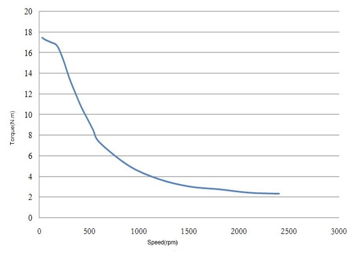
O κινητήρας που επιλέγεται πρέπει να αρκετή ροπή για να περιστρέψει το γερανό, όπως υπολογίζεται μετά τον μειωτήρα.
| Ροπή στην έξοδο (φορτίου) | [Nm] | 5303 |
| Ισχύς φορτίου | [W] | 370 |
| Στατική Ροπή ΗΚ | 20 | |
| Ροπή στις 200rpm | 16.6 | |
| Σχέση μετάδοσης για κάλυψη της ροπής στρέψης @ 200rpm | 318 | |
| Στροφές ΗΚ | 200 | |
| Περιστροφική ταχύτητα γερανού | 0.6 | |
| Ζητούμενη σχέση μετάδοσης στις 200rpm | 333 | |
| Ροπή στις 200rpm | 16.5 | |
| Ροπή στην έξοδο: | 5500 |
Επιλέγεται βηματικός κινητήρας 20Nm που θα λειτουργεί εως 200rpm, με σχέση μετάδοσης μεγαλύτερη από 333.
7.4.1. Δυνατότητες επιλογής μειωτήρα
| Ολική σχέση μετάδοσης | Βαθμίδες μειωτήρα | Σχέση μετάδοσης κάθε σταδίου | ||
|---|---|---|---|---|
| Σχέση μετάδοσης | 333 | 2 | 18.2 | |
| 333 | 3 | 6.9 | ||
| 333 | 4 | 4.3 | ||
| 333 | 5 | 3.2 | ||
| 333 | 6 | 2.6 | ||
| 333 | 7 | 2.3 |
7.4.2. Διαστάσεις βηματικού κινητήρα
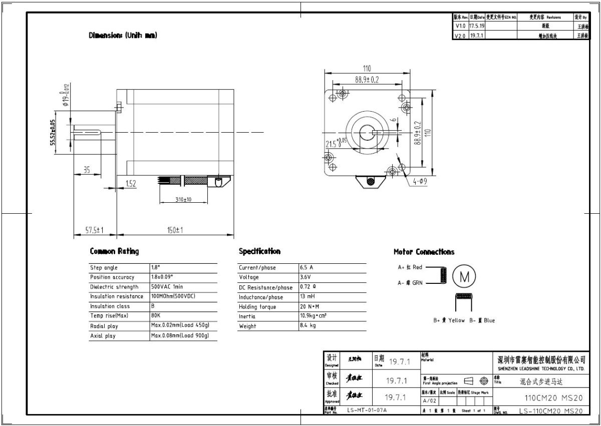
7.5. Εφελκυστική μηχανισμού
| Ροπή στην έξοδο (φορτίου) | Μ | 5303 | [Nm] |
| Ακτίνα περιστροφής | R | 120. | mm |
| Εφελκυστικη δύναμη | \(F=M/R\) | 66287.5 | N |
H εφελκυστική τάση δίνεται από τη σχέση:
\[\sigma = \dfrac{N}{A}\]
H απαιτούμενη επιφάνεια είναι:
\[Α = \dfrac{N}{\sigma}\]
| Δυναμη | N | 70000 | Ν |
| τάση διαρροής | σ | 370 | MPa |
| Επιφάνεια ράβδου | Α | 1.8918919e-4 | m2 |
| Ορθογωνική | 13.754606 | mm | |
| Κυλινδρική | 20 | mm |
7.6. Υπολογισμός απόστασης παλινδρόμησης
Η απόσταση παλινδρόμησης υπολογίστηκε γραφικά σύμφωνα με το παρακάτω σχέδιο:
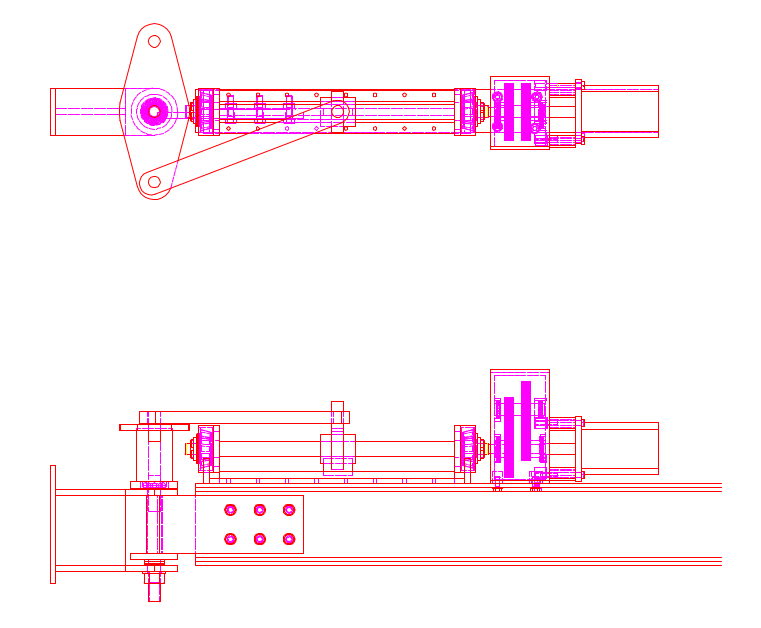
7.7. Επιλογή 1
Επιλέγεται κοχλίας κίνησης (lead screw):
H θλιπτική δύναμη σε λυγισμό είναι 70κΝ.
Από το διάγραμμα:
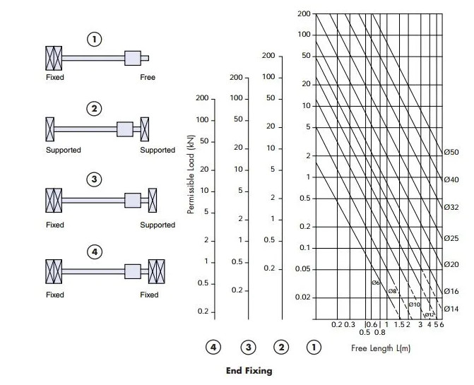
Τα τεχνικά χαρακτηριστικά του κοχλία είναι:
| Μήκος διαδρομής | \(L\) | 320 | mm |
| Διάμετρος κοχλία | \(D\) | 20 | mm |
| Βήμα κοχλία | \(s\) | 5.0 | mm |
| Στροφές βηματικού για πλήρη κίνηση | \(n=\dfrac{L}{s}\) | 64. | rotations |
Υπολογίζεται ο νεός μειωτήρας:
| Ταχύτητα περιστροφής γερανού | \(n_1\) | 0.6 | rpm |
| Στροφές βηματικού για κίνηση εμβόλου | \(n_2\) | 64 | rotations |
| Περιστροφική ταχύτητα βηματικού κινητήρα | \(n=n_1 \ times n_2\) | 38.4 | rpm |
Η ταχύτητα του εμβόλου - διωστήρα δεν είναι σταθερή και προτείνεται η τοποθετήση του encoder του κινητήρα στο περιστροφικό τμήμα του γερανού, ωστε να ελέγχεται απευθείας από τον controller του βηματικού κινητήρα.
Η νέα σχέση μετάδοσης είναι:
| Περιστροφική ταχύτητα βηματικού κινητήρα | \(n=n_1 \ times n_2\) | 38.4 | rpm |
|---|---|---|---|
| Περιστροφική ταχύτητα γερανού | \(n=n_1 \ times n_2\) | 0.6 | rpm |
| σχέση μετάδοσης | 64. | ||
| Ροπή φορτίου | 5303 | Nm | |
| Ροπή στον κοχλία | 82.859375 | Nm | |
| Σχέση μετάδοσης μειωτήρα | 6 | ||
| Νέα ροπή κινητήρα | 13.809896 | Nm | |
| Νέες στροφές κινητήρα | 230.4 | rpm |
Η ροπή είναι μεγάλη και χρησιμοποιείται μειωτήρας 1:6
| Ολική σχέση μετάδοσης | Βαθμίδες μειωτήρα | Σχέση μετάδοσης κάθε σταδίου | ||
|---|---|---|---|---|
| Σχέση μετάδοσης | 6 | 2 | 2.4 | |
| 6 | 3 | 1.8 |
Επιλέγεται μειωτήρας 1:6 με 2 βαθμίδες.
Οι ροπές είναι:
| Ροπή εισόδου | 13 | Nm | |
| Ροπή εξόδου | 82 | Nm |
Τα χαρακτηριστικά του μειωτήρα είναι:
| Απόσταση κέντρα | \(R=r_1+r_2\) | 100 | mm |
| Λόγος σχέσης μετάδοσης | \(lambda = \dfrac{r_1}{r_2}\) | 2.4 | |
| Ακτίνα μικρό γρανάζι | \(r_1=\dfrac{r_1}{\lambda+1}\) | 29 | |
| Ακτίνα μεγάλο γρανάζι | \(r_2=R-r_1\) | 71 | |
| Ελεγχος λόγου: | 2.4482759 |
7.7.1. Μικρό γρανάζι
| Επιλογή modulus | \(m\) | 1.0 | |
| Διάμετρος μικρό γραναζι | \(d_1\) | 58 | mm |
| Αρ.δοντιων 1 | \(z_1=\dfrac{d_1}{m}\) | 58. | |
| \(z_1\) | 39 | ||
| Διάμετρος μικρό γρανάζι | 39. | mm |
7.7.2. Μεγάλο γρανάζι
| Επιλογή modulus | \(m\) | 1.0 | |
| Διάμετρος μικρό γραναζι | \(d_1\) | 142 | mm |
| Αρ.δοντιων 1 | \(z_1=\dfrac{d_1}{m}\) | 142. | |
| \(z_1\) | 95 | ||
| Διάμετρος μικρό γρανάζι | 95. | mm |
7.7.3. Νέα σχέση μετάδοσης
| Απόσταση κέντρα | 67. | mm | |
| Διάμετρος μικρό γρανάζι | 39 | mm | |
| Δοντια μικρό γρανάζι | 39 | ||
| Διάμετρος μεγάλο γρανάζι | 95 | mm | |
| Δοντια μεγάλο γρανάζι | 95 | ||
| Ελεγχος λόγου: | 2.4358974 |
8. Ελεγχος με πεπερασμένα
8.1. 22kN ελευθερο ακρο - Δυνάμεις

8.2. 22kN ελευθερο ακρο - Παραμορφώσεις

8.2.1. 22kN στο μέσο - Δυνάμεις

8.2.2. Με τη διαγώνια ράβδο στήριξης 22kN στο μέσο - Παραμορφώσεις